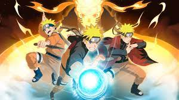
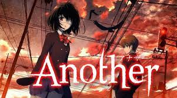

Anime Recommendation
welcome
Demon Slayer

Out :2019
Genre : adventure, dark,surnaturel, fantasy, action,drame
Story : A family is attacked by demons and only two members survive - Tanjiro and his sister Nezuko, who is turning into a demon slowly. Tanjiro sets out to become a demon slayer to avenge his family and cure his sister.
Genre : adventure, dark,surnaturel, fantasy, action,drame
Story : A family is attacked by demons and only two members survive - Tanjiro and his sister Nezuko, who is turning into a demon slowly. Tanjiro sets out to become a demon slayer to avenge his family and cure his sister.
Zankyou No Terror

Out :2014
Genre: drama, thriller
Story: Zankyou no Terror tells the story of Nine and Twelve, the two boys behind the masked figures of Sphinx. They should not exist, yet they stand strong in a world of deception and secrets while they make the city fall around them, all in the hopes of burying their own tragic truth.
Genre: drama, thriller
Story: Zankyou no Terror tells the story of Nine and Twelve, the two boys behind the masked figures of Sphinx. They should not exist, yet they stand strong in a world of deception and secrets while they make the city fall around them, all in the hopes of burying their own tragic truth.
Hunter x Hunter
Out :2011
Genre: Adventure ,Fanatsy, Martial arts
Story: Gon Freecss aspires to become a Hunter, an exceptional being capable of greatness. With his friends and his potential, he seeks for his father who left him when he was younger.
Genre: Adventure ,Fanatsy, Martial arts
Story: Gon Freecss aspires to become a Hunter, an exceptional being capable of greatness. With his friends and his potential, he seeks for his father who left him when he was younger.
Attack On Titan

Out :2015
Genre:Action, dark fantasy, horreur, mystère, tragédie, thriller
Story : he story follows Eren Yeager, who vows to exterminate the Titans after a Titan brings about the destruction of his hometown and the death of his mother.
Genre:Action, dark fantasy, horreur, mystère, tragédie, thriller
Story : he story follows Eren Yeager, who vows to exterminate the Titans after a Titan brings about the destruction of his hometown and the death of his mother.
Banana Fish

Out :2018
Genre: Action, drame, aventure.
Story: The story captures the war between a mafia boss named Dino and a young gang leader searching for redemption .
Genre: Action, drame, aventure.
Story: The story captures the war between a mafia boss named Dino and a young gang leader searching for redemption .
Naruto

Out :2002
Genre: Ninjas, drame, combats, art martial .
Story: the story of Naruto Uzumaki, a young ninja who seeks recognition from his peers and dreams of becoming the Hokage, the leader of his village.
Genre: Ninjas, drame, combats, art martial .
Story: the story of Naruto Uzumaki, a young ninja who seeks recognition from his peers and dreams of becoming the Hokage, the leader of his village.
Another

Out :2012
Genre: Horreur.
Story: A young man named, Koichi Sakakibara, transfers to a new school where he finds himself drawn into a mystery involving a mysterious girl and a series of gruesome deaths.
Genre: Horreur.
Story: A young man named, Koichi Sakakibara, transfers to a new school where he finds himself drawn into a mystery involving a mysterious girl and a series of gruesome deaths.
Tokyo Revengers
Out :2021
Genre: Action, drame, romance, science-fiction.
Story: A middle-aged loser travels in time to his school years and in order to save the love of his life from future doom, he must become the leader of a dreaded school gang.
Genre: Action, drame, romance, science-fiction.
Story: A middle-aged loser travels in time to his school years and in order to save the love of his life from future doom, he must become the leader of a dreaded school gang.
One Piece

Out :1999
Genre: aventure, comedy, drama, fantasy, humour, satire
Story: The series focuses on Monkey D. Luffy, a young man who, inspired by his childhood idol and powerful pirate "Red Haired" Shanks, sets off on a journey from the East Blue Sea to find the titular treasure and proclaim himself the King of the Pirates.
Genre: aventure, comedy, drama, fantasy, humour, satire
Story: The series focuses on Monkey D. Luffy, a young man who, inspired by his childhood idol and powerful pirate "Red Haired" Shanks, sets off on a journey from the East Blue Sea to find the titular treasure and proclaim himself the King of the Pirates.
The Promised Neverland
Out :2019
Genre: Aventure, dark fantasy, mystère, psychologique, drame, science-fiction, surnaturel, thriller
Story : Three protagonists, Emma, Norman, and Ray, along with a cast of orphans who live together. Their lives have been full of joy, that is until the protagonists learn the orphanage is really a farm where children are raised and given to demons to be eaten.
Genre: Aventure, dark fantasy, mystère, psychologique, drame, science-fiction, surnaturel, thriller
Story : Three protagonists, Emma, Norman, and Ray, along with a cast of orphans who live together. Their lives have been full of joy, that is until the protagonists learn the orphanage is really a farm where children are raised and given to demons to be eaten.
Tokyo Revengers
Out :2021
Genre: Action, drame, romance, science-fiction.
Story: A middle-aged loser travels in time to his school years and in order to save the love of his life from future doom, he must become the leader of a dreaded school gang.
Genre: Action, drame, romance, science-fiction.
Story: A middle-aged loser travels in time to his school years and in order to save the love of his life from future doom, he must become the leader of a dreaded school gang.
Death Note
Out :2006
Genre: Policier, Fantastique, Thriller psychologique, Surnaturel, Mystère.
Story: Light Yagami, a teen genius who discovers a mysterious notebook: the "Death Note", which belonged to the Shinigami Ryuk, and grants the user the supernatural ability to kill anyone whose name is written in its pages.
Story: Light Yagami, a teen genius who discovers a mysterious notebook: the "Death Note", which belonged to the Shinigami Ryuk, and grants the user the supernatural ability to kill anyone whose name is written in its pages.
we come to the end ❤
 << page 3
<< page 3